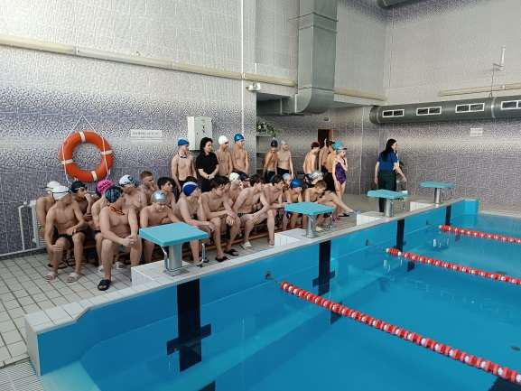
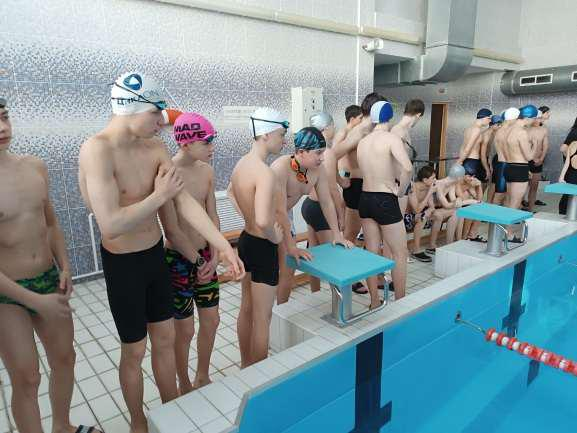
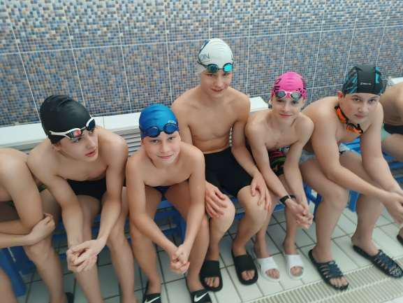
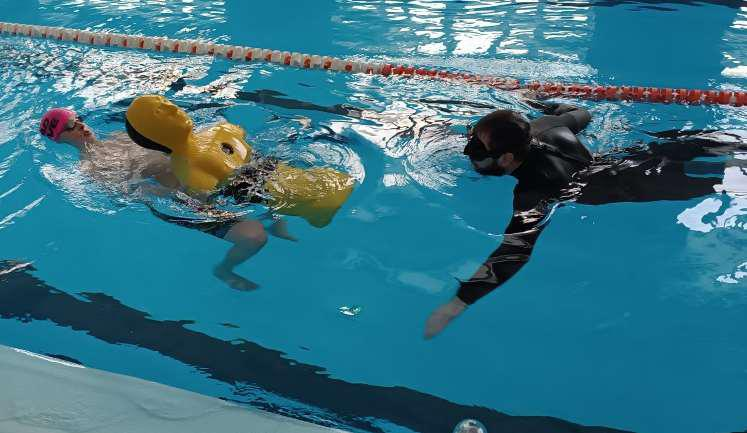
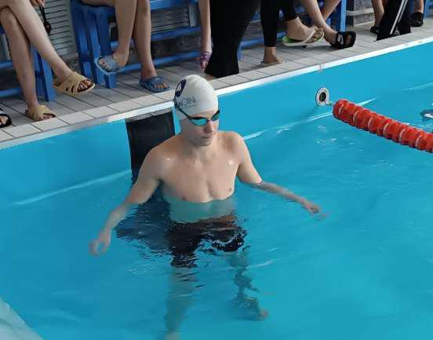
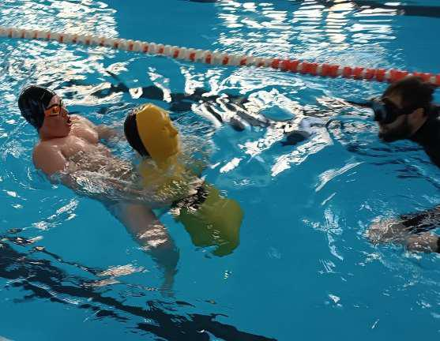

КОМАНДА С МУЖСКИМ ХАРАКТЕРОМ!
Конкурс «Спасание на водах – 2026» – это не просто соревнования – это шанс на жизнь, возможно один из тысячи, который могут дать в будущем участники соревнования утопающему.

6 марта в бассейне Государственного учреждения образования «Средняя школа №25 г. Борисова» под руководством представителей Борисовского ГРОЧС состоялся районный этап конкурса. Лучшие пловцы представляли свои учреждения образования. Нашу гимназию представляла команда в составе: Демидчика Виктора, Вашкевича Михаила, Вашкевича Кирилла, Головаченко Ярослава и Губкевича Романа. По условиям конкурса каждому участнику предстояло проплыть 15 м, нырнуть за макетом утопающего весом 50 кг на 5 м и вернуться с ним в исходное положение. По возрастным критерием команда гимназии была самой юной. К слову сказать, вес макета превышал вес Вашкевича Кирилла. Начало соревнований показало, что задача спасти «утопающего», несмотря на хорошую подготовку пловцов, не просто тяжелая, но и непосильная. Так из 49 участников, только 17 смогли ее выполнить, остальные сошли с дистанции. Наши мальчишки проявили свои лучшие физические качества, стремление и волю к победе. Все гимназисты не только прошли дистанцию, но и выполнили задачу без единого штрафного очка. По итогам конкурса команда заняла 1 место, в личном первенстве 1 место занял Ярослав Головаченко, 2 место у Михаила Вашкевича. Ярослав Головаченко выполнил упражнение за 34 секунды, что на две секунды меньше прошлогоднего рекорда. Остальные участники команды вошли в десятку сильнейших. Четыре учащихся: Ярослав Головаченко, Михаил Вашкевич, Демидчик Виктор и Вашкевич Кирилл начнут подготовку к участию в областном этапе конкурса.


Особые слова благодарности, хотелось бы выразить Роману Шмакову, участнику конкурса «Спасание на водах – 2025», который на протяжении всех тренировок передавал свое мастерство ребятам. Несомненно, что результативное выступление команды – это и его непосредственная заслуга!


